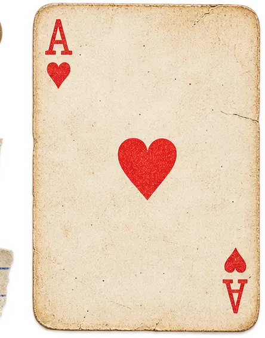
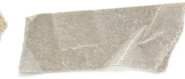
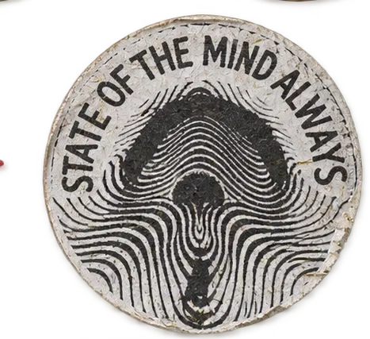
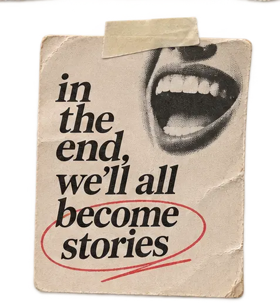
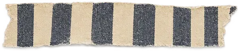
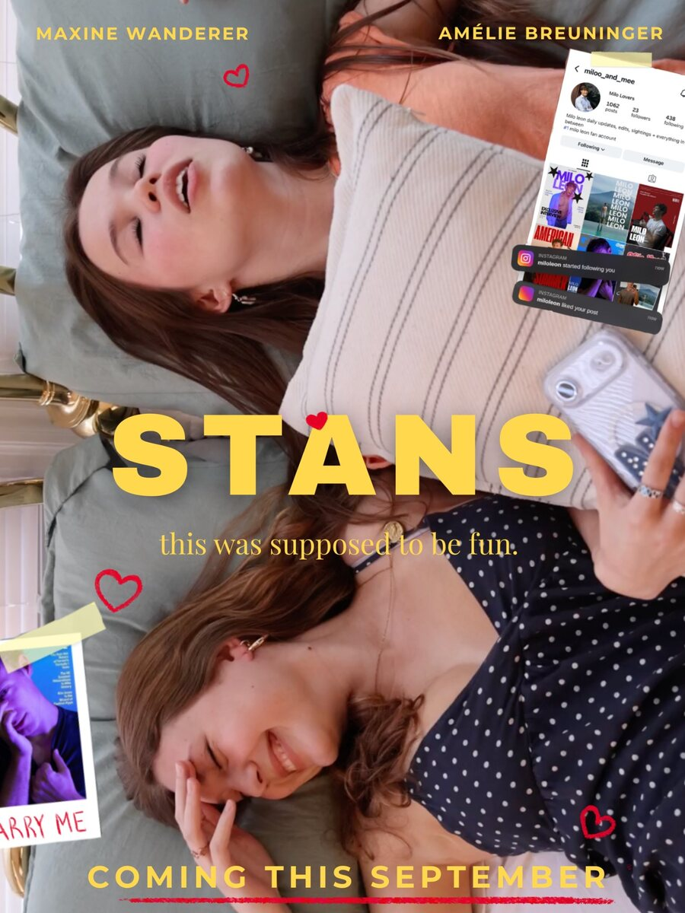
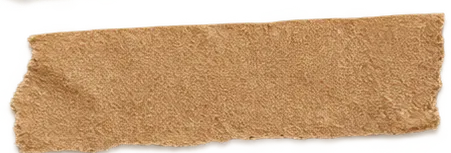
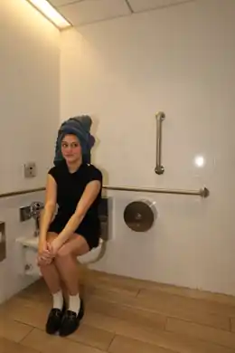
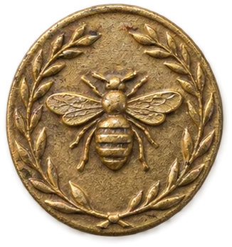

Video, writing & comedy.
I research, write, shoot, edit, and occasionally get on stage.
TAKE A LOOK DOWN ↓







Things I’ve written, performed, and put out into the world.









On the page.


I’m Emilia Bronk. I hail from the greatest state of the Great Lakes, where I picked up most of my vocabulary. I unfortunately now reside in New Jersey, where I hope I’ve picked up nothing.
I just finished my degree in Philosophy, Politics, and Economics at the University of Pennsylvania. I spent most of my time in Mask and Wig, the oldest formerly all-male musical comedy group without ties to Jeffrey Epstein, and became its first woman chair in 138 years.
I’ve made social video at Morning Brew and currently work in congressional communications, drafting press releases and remarks. I like 2% milk and shucking corn.
Research to post-production for Morning Brew’s page.
